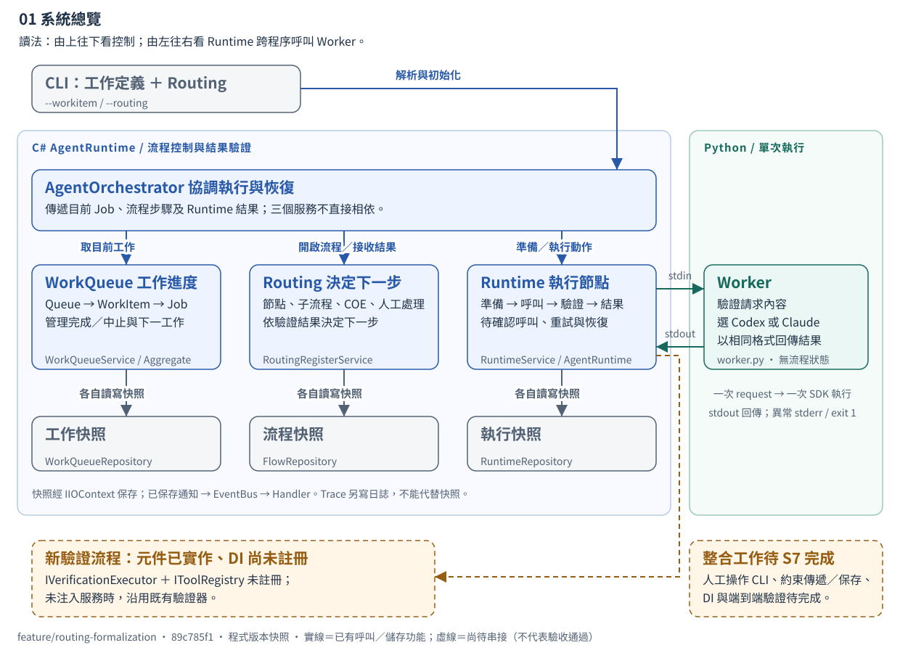
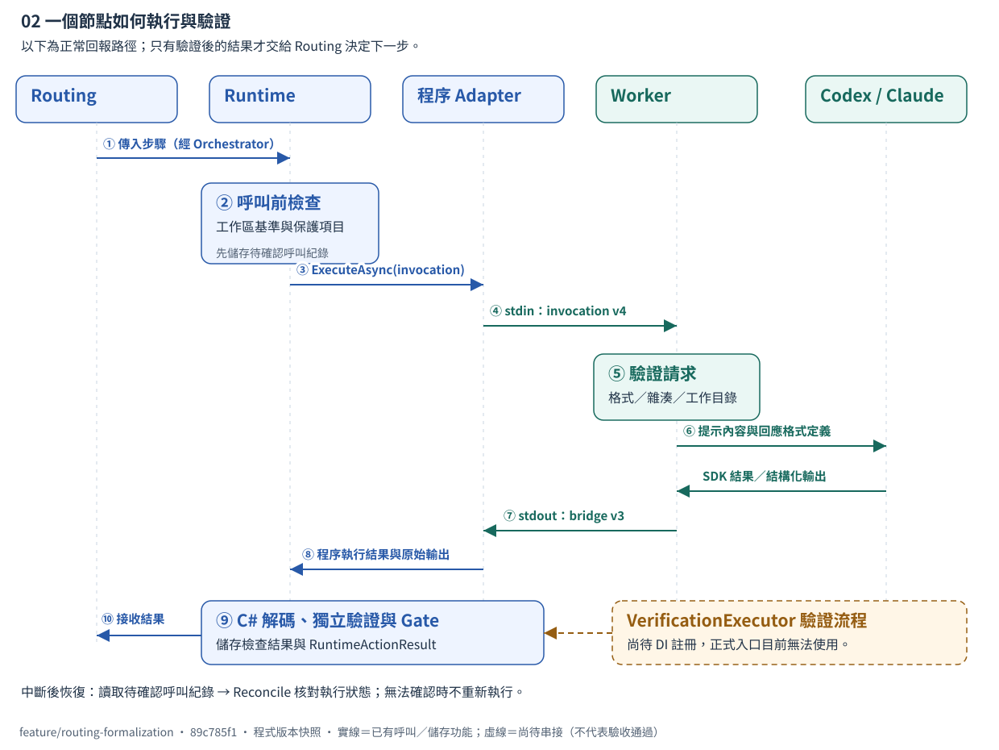
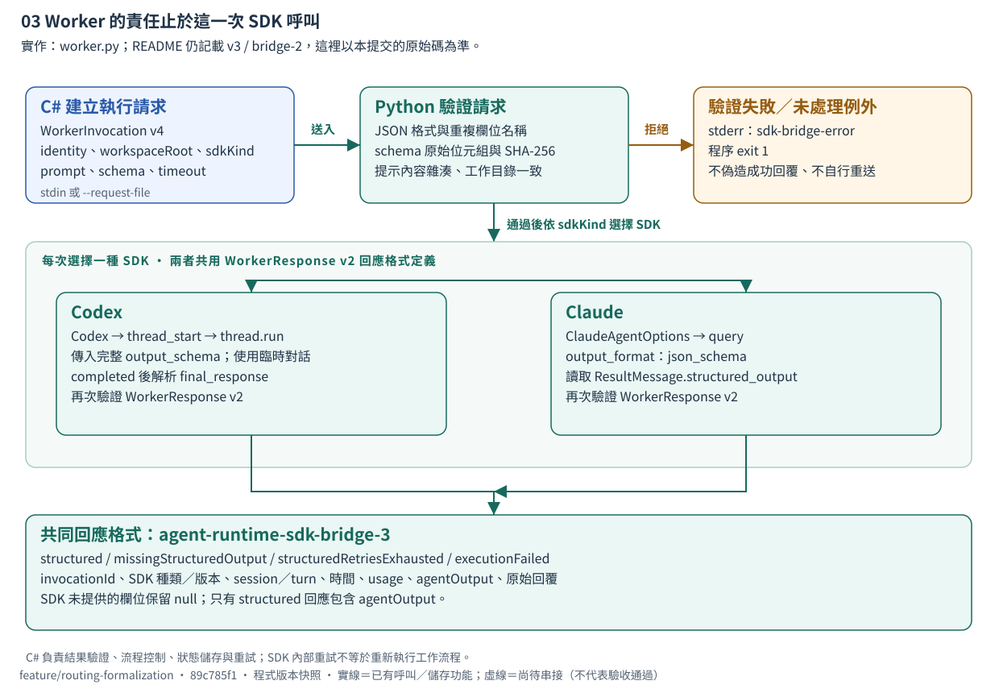
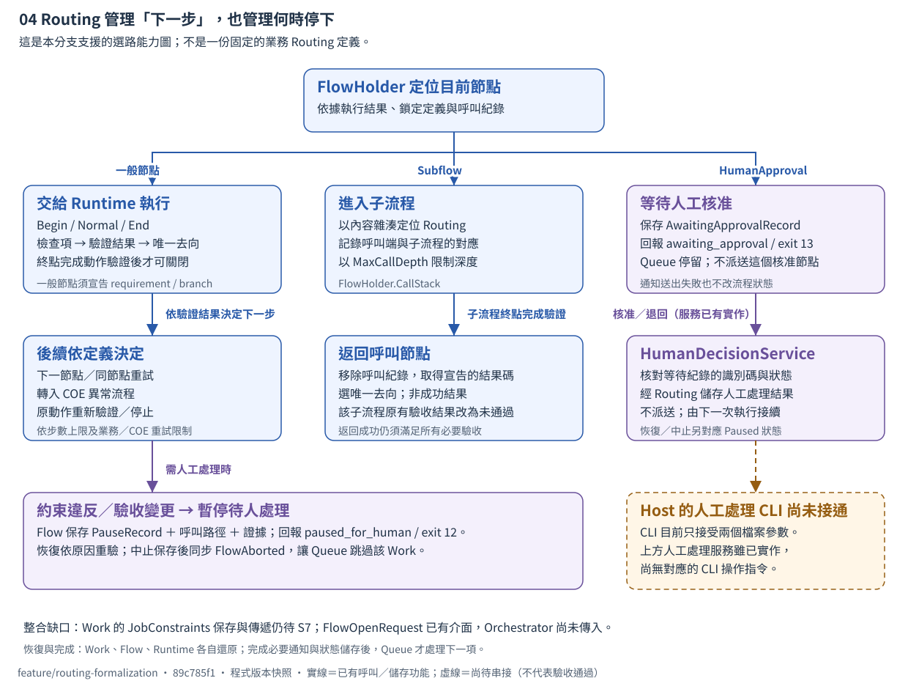
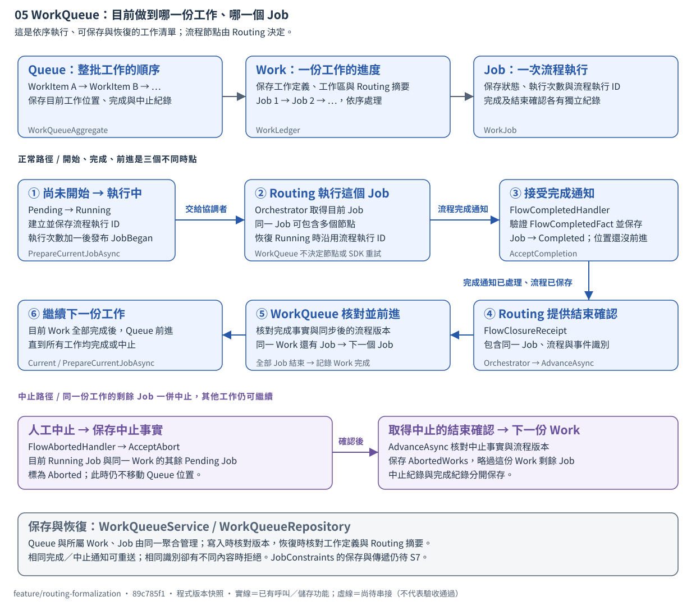
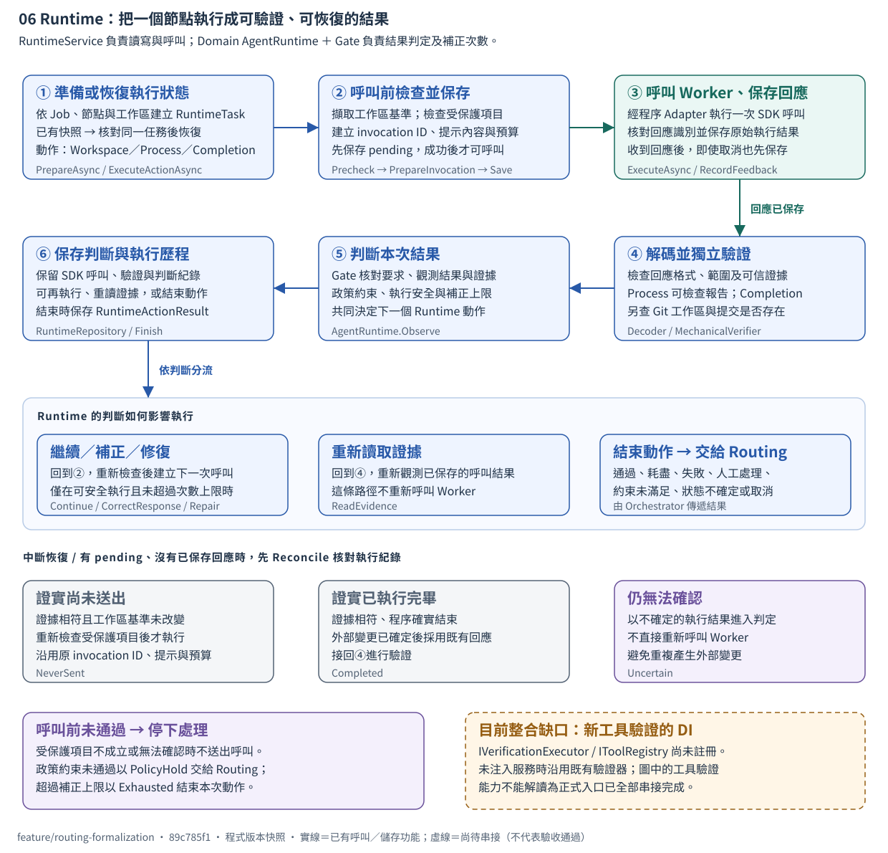
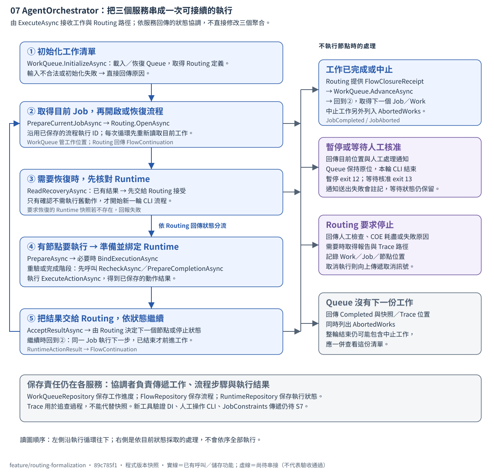

驗證元件已實作，尚未完成 DI 註冊
VerificationExecutor 與工具註冊介面已實作，但尚未加入 RuntimeServiceRegistry 的 DI 設定。未注入這些服務時，Runtime 會沿用既有驗證器的檢查結果。
看驗證位置 →FEATURE / ROUTING-FORMALIZATION
C# 負責工作流程與結果驗證，
Python 依指定設定呼叫 Agent SDK。
89c785f1S1–S6 已完成 · S7 整合尚未完成依目標分支的程式與交接紀錄繪製；進度採用既有紀錄，本次未重新執行產品測試或呼叫 SDK。
先看 01 掌握分工；02、03 說明一次 SDK 呼叫；04～06 深入三個核心元件，最後用 07 串起整個執行循環。
01 / 責任總覽
三個聚合各自儲存狀態，由 AgentOrchestrator 傳遞工作進度與執行結果。箭頭表示呼叫或資料儲存關係。
圖可左右捲動；點「開啟原始大小」可獨立放大閱讀。

89c785f1。實線表示程式已有路徑；橙色虛線與文字標示整合缺口。查閱來源02 / 單次呼叫
SDK 呼叫成功後，C# 仍須檢查執行結果與證據，再由 Gate 判定是否符合要求。中斷後先核對執行紀錄，避免重複執行。
圖可左右捲動；點「開啟原始大小」可獨立放大閱讀。

89c785f1。實線表示程式已有路徑；橙色虛線與文字標示整合缺口。查閱來源03 / Worker 內部
Worker 已有 Codex 與 Claude 兩條執行路徑；使用相同的資料格式定義（schema）驗證回應，再轉成相同的回應格式。業務流程狀態與重試決策都留在 C#。
圖可左右捲動；點「開啟原始大小」可獨立放大閱讀。

89c785f1。實線表示程式已有路徑；橙色虛線與文字標示整合缺口。查閱來源04 / Routing 與人工處理
FlowHolder 儲存目前節點、子流程呼叫紀錄、必要驗收項目與等待狀態。人工處理服務已實作，但 Host 的 CLI 入口尚待整合。
圖可左右捲動；點「開啟原始大小」可獨立放大閱讀。

89c785f1。實線表示程式已有路徑；橙色虛線與文字標示整合缺口。查閱來源05 / WorkQueue 工作進度
Queue 管理工作順序，WorkLedger 管理一份工作的 Job，WorkJob 保存執行狀態。完成通知與前進是兩個步驟；人工中止則略過同一份工作的剩餘 Job。
圖可左右捲動；點「開啟原始大小」可獨立放大閱讀。

89c785f1。實線表示程式已有路徑；橙色虛線與文字標示整合缺口。查閱來源06 / Runtime 執行與恢復
RuntimeService 處理 I/O，Domain AgentRuntime 與 Gate 決定繼續、補正或結束。圖中分開呈現正常執行、結果判定與中斷恢復，也保留尚未完成的 DI 整合。
圖可左右捲動；點「開啟原始大小」可獨立放大閱讀。

89c785f1。實線表示程式已有路徑；橙色虛線與文字標示整合缺口。查閱來源07 / AgentOrchestrator 協調
AgentOrchestrator 取得目前 Job、恢復流程、準備 Runtime，並將結果交回 Routing。它也處理流程結束、等待人工處理與錯誤回報；各服務負責自己的狀態與儲存。
圖可左右捲動；點「開啟原始大小」可獨立放大閱讀。

89c785f1。實線表示程式已有路徑；橙色虛線與文字標示整合缺口。查閱來源READ THE BOUNDARIES
VerificationExecutor 與工具註冊介面已實作，但尚未加入 RuntimeServiceRegistry 的 DI 設定。未注入這些服務時，Runtime 會沿用既有驗證器的檢查結果。
看驗證位置 →程式接受 invocation v4、輸出 bridge v3，並可選 Codex／Claude；Worker README 仍描述 v3、bridge-2 與單一 Codex。
看真實協定 →HumanDecisionService 可保存恢復、中止、核准或退回的決定；Host 解析器目前仍只接受工作與 Routing 兩個檔案參數。
看等待與返回 →S7 另外包含 JobConstraints 的工作快照保存與傳遞、Application 層 JSON 邊界整理、比較與最終冒煙測試。上述圖示不表示這些整合已完成。
EVIDENCE & LIMITS
本地分支與 origin 同為 89c785f1。以 git archive / git show 讀固定版本，對照協調者、WorkQueue、Runtime、DI、Worker、Routing 與 Host，來源檔案的 SHA-256 記錄於 來源版本與摘要。
本次 Chrome 檢查通過：375／768／1024／1440px 四種寬度、七頁籤、鍵盤方向鍵、導引連結及減少動態效果；七張 SVG 的文字沒有重疊或超出方框。新增三張圖已逐張檢視畫面。
分支交接記載：Unit 758/758、Functional 413/414、Integration 257/273、Architecture 36/38。S7 尚待進行，不能據此宣稱整體驗收通過。
本次未執行 Agent 工作、實際 SDK 呼叫、Runtime 回歸或正式研究實驗。
SOURCE MAP
來源固定於 89c785f1。原始碼與測試證據位於非公開專案；此公開版保留元件名稱、來源版本與檔案摘要，供核對架構依據。
三服務協調、準備／執行／接受、暫停與通知；FlowOpenRequest 未傳 Constraints。
src/applications/agent-runtime/Application/AgentOrchestrator.cs已註冊既有驗證器；尚未註冊 IVerificationExecutor / IToolRegistry。
src/applications/agent-runtime/Configurations/RuntimeServiceRegistry.cs呼叫前儲存紀錄，以 Reconcile 核對執行狀態；未注入 executor 時沿用原檢查結果。
src/applications/agent-runtime/Application/RuntimeService.csC# 啟動 Worker 程序，並核對執行紀錄。
src/applications/agent-runtime/Infrastructure/Agents/AgentProcessAdapter.csinvocation v4、response v2、bridge v3；Codex 與 Claude 分流。
src/applications/agent-runtime/worker/worker.py仍描述 invocation v3 / bridge-2 / 單 Codex，與程式不一致。
src/applications/agent-runtime/worker/README.mdFlow 建立、結果接受、獨立保存與人工處理。
src/applications/agent-runtime/Application/Flow/RoutingRegisterService.cs子流程、子流程呼叫紀錄、暫停、等待核准、驗收重驗。
src/applications/agent-runtime/Domain/Routing/FlowHolder.Hold.cs只儲存人工處理結果，不自動執行或繼續流程。
src/applications/agent-runtime/Application/HumanDecisions/HumanDecisionService.cs只接受 --workitem、--routing。
src/applications/agent-runtime/Host/CommandLineParser.cs工具登錄、標準輸入、程序、輸出轉換、判定與證據。
src/applications/agent-runtime/Application/Verification/VerificationExecutor.cs檢查值／狀態與證據識別資訊；Worker 自報不能替代證據。
src/applications/agent-runtime/Domain/Responses/Gate.cs文件記載 S1～S6 done、S7 pending；不是本次測試。
core/progress/AgentRuntime/implementation/state.jsonS7 清單與目前回歸數量。
core/progress/AgentRuntime/handoff-current.md初始化與恢復、開始 Job、沿用流程執行 ID，收到結束確認後前進。
src/applications/agent-runtime/Application/Work/WorkQueueService.csQueue 管理成員版本與目前位置，分別記錄完成及中止工作。
src/applications/agent-runtime/Domain/Work/WorkQueueAggregate.cs完成通知不前進；確認流程結束才移動 Job。中止同一 Work 的剩餘 Job。
src/applications/agent-runtime/Domain/Work/WorkLedger.csJob 開始、完成、中止與流程結束確認的狀態變更。
src/applications/agent-runtime/Domain/Work/WorkJob.cs接受並保存流程完成事實，不前進工作位置。
src/applications/agent-runtime/Application/Events/FlowCompletedHandler.cs接受並保存中止事實，標記同一 Work 的剩餘 Job。
src/applications/agent-runtime/Application/Events/FlowAbortedHandler.csGate、補正上限、政策約束、證據重讀、結束結果與保存紀錄。
src/applications/agent-runtime/Domain/Execution/AgentRuntime.cs使用 UI UX Pro Max 的文件型介面建議：Swiss Style、留白、語意色、文字層級與鍵盤操作。資料庫對數量流圖的建議不適合本次控制流程，架構圖採人工編排的關係圖與泳道。
參考 repo 既有 AgentRuntime 架構頁及 C#／Python SDK 架構回顧；歷史圖與證據保持原樣。
本頁為公開閱讀版；架構與進度以 89c785f1 為準。公開發佈不代表 S7 整合或產品驗收已完成。